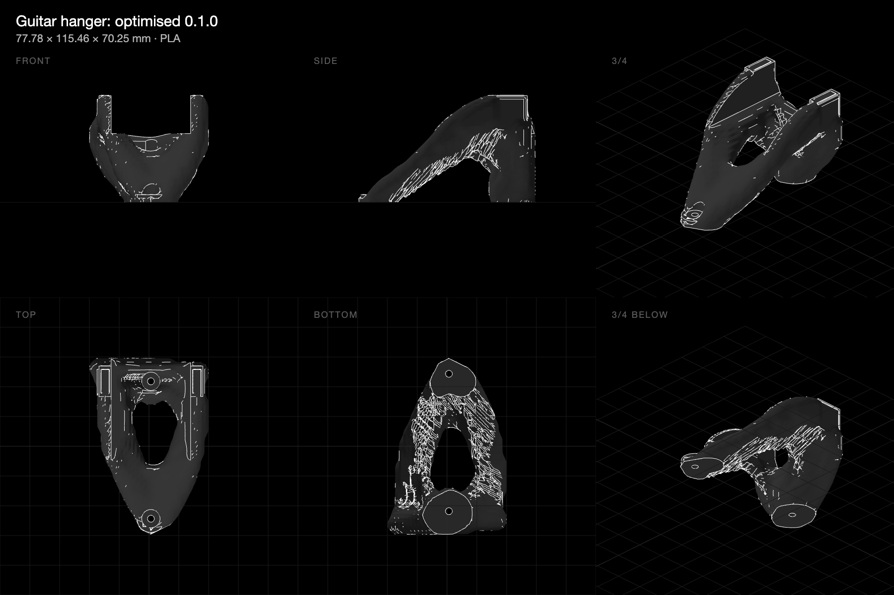

← rulecad archive
Guitar hanger: a wall mount grown from two screws to a cradle, twice
30 October 2026 · @rulecad/cad 0.7.16 · examples/bench/projects/showcase/problems/guitar.json
The first showcase part meant for daily use: a wall hanger for a six-string Telecaster, hung by its neck. The neck sits in a U just below the headstock, which rests on the U's two arms. The part prints lying on its back, so z is out from the wall and y up it, and nothing is drawn but what the problem keeps: two screw bosses on the wall, 90 mm apart, and two arm pads 52 mm apart (a Telecaster neck is 42 mm at the nut, leaving room for a foam strip each side, and the headstock is wider). The optimiser grows the arms from the bosses to the pads against three cases on the pads: the guitar hanging (4 kg with a margin), a tug away from the wall, and a knock sideways. 12% of a 110 × 130 × 70 mm space on 2.5 mm cells (86,000 after padding), struts at least 6.5 mm, printable without supports in +z.

| Attempt | Kept empty | Shape | Hanging / tugged / knocked | Run | Model |
|---|
| 1 | nothing | An A-frame with a window: a trunk from the lower screw to the arms, a post down to the upper screw under the pads | 11,600 / 11,200 / 7,730 N/mm | 52 min, 234 steps, settled | Open in 3D |
| 2 | the neck's channel between the arms, down the whole wall; a 12 mm column over each screw for the head and the driver | A yoke: two arms from a wide saddle over the upper screw, braced down to the lower one round a window | 9,910 / 9,100 / 5,910 N/mm | 57 min, 252 steps, settled | Open in 3D |
Both 120 cm³, 151 g of PLA; the loads are 40 N hanging, plus 20 N away from the wall or 15 N sideways.
Findings
- Say where the guitar goes, or the optimiser fills it. The first attempt put its trunk and the post under the pads exactly where the neck hangs, and let material grow over the screw bosses. The problem said nothing about either. The second keeps the neck's channel empty between the arms down the whole wall, from a little behind the pads' underside outward, and a column over each boss; the channel came out with no material at all, the columns too, and the arms now grow from the sides. It cost 15% of the stiffness hanging and 24% knocked, for a part that can be used.
- An A-frame, not a plate. With only the bosses kept, the optimiser made a sloping trunk from the lower screw up
to the arms, and a short post down to the upper screw under the pads, with a window between them. Both screws work: every cell above the upper boss is used, two thirds of those above the lower one.
- The arms rise at the overhang limit. From the trunk the two arms fan out to the pads at 45°, which is the
printer's rule, so the U's shape comes from the printer as much as from the loads.
- Kept pads need a roof underneath. The pads' flat undersides were reached by struts from one side only, and
cad check saw an 8.7 mm bridge. The design adds a gable under each pad, a touch steeper than 45° (as the bin's ledge), and every check passes.
- Booleans mind their winding. The gable's polygon was first drawn clockwise, which made the prism inside-out and
cut the pads instead of filling under them: the check reported a 139 mm bridge, which is how it was found.
- Stiff where it counts. 11,600 N/mm hanging means 4 kg moves the pads by three thousandths of a millimetre;
the knock, sideways across the arms, is the softest case at two thirds of that.
Next
- Print it, pad the arms, hang the guitar: the first optimised part on a wall.
- A variant with one screw and a wider boss, if a single fixing is enough: the tug and the knock are what the lower
screw is for.
- A second hanger for a bass or an acoustic: only the gap and the weight change.